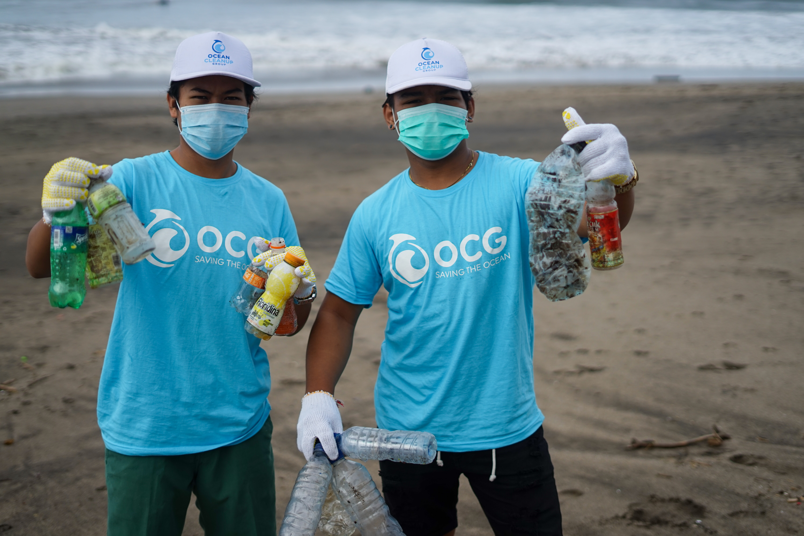

What is Project Blue?
Here at Project Blue our main purpose is to protect marine life anyway possible. That could mean cleaning our oceans, protecting endangered species. Our mission is to create a saver and cleaner ocean by 2029.
History of Project Blue?
Project Blue start way back in 1921 when a man by the name of John Wilson saw the amount of trash and waste being thrown into the ocean by big companies.He decided to step up and confornt the monopolies, this resulted in the group know as Project Blue. Ever seen we have been making the ocean a better place for the marine life and humans.
Join The Team
If you want to be part of one the biggest ocean organaizations join the team here! "How to Help"
